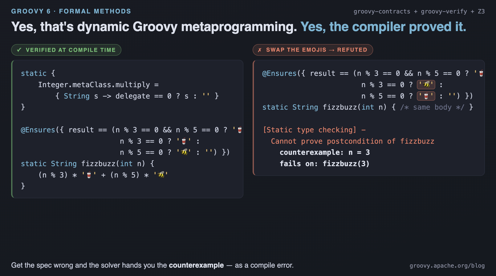
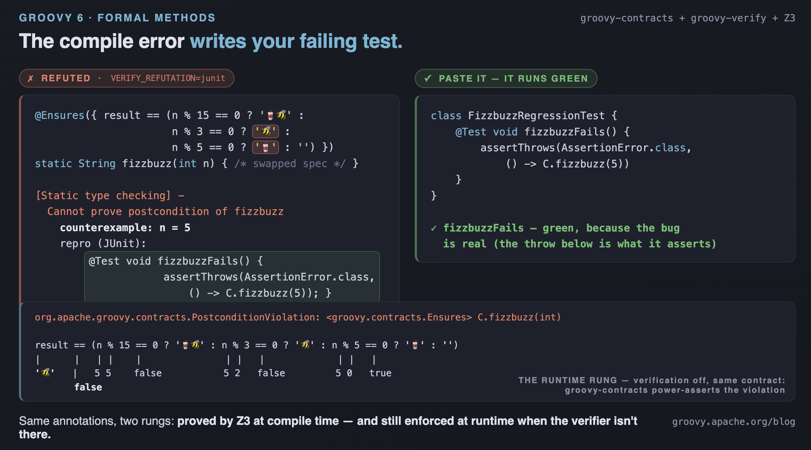

Groovy 6 features for formal method advocates

Published: 2026-07-03 08:00PM (Last updated: 2026-07-08 08:00PM)
Introduction
How much confidence can you have that your code is correct — not "passes the tests we thought to write", but correct for every input?
On the JVM the usual answers are types, tests, and code review. Each helps; none of them proves a postcondition holds for all inputs, that an index can never go out of bounds, that a class invariant survives every mutator, or that a lock-free buffer stays in bounds under every thread interleaving. The discipline that does make those claims — formal methods — has long felt like a separate world: a different language (Dafny), a comment dialect bolted onto Java (JML), or a proof assistant you drive by hand (Isabelle, Lean).
This post is about how much of that world is reachable from ordinary Groovy 6 — and it is more than you might expect. As a taste: that is runtime metaclass programming below, verified against an exact specification at compile time — and when the spec is wrong, the compiler answers with the input that breaks it:

(How a metaclass method can be type-checked at all, let alone proved, is a story for later in the post.)
Two things matter, and it is worth being precise about which is which:
-
Shipping in Groovy 6 today are two complementary, production-ready features: the
groovy-contractsmodule (Design by Contract —@Requires,@Ensures,@Invariant,@Decreases,@Modifies), and a family of type-checking extensions (NullChecker,PurityChecker,CombinerChecker,MonadicChecker,RegexChecker, and more) plugged in through one public SPI. You can adopt both immediately, and they pay their way on their own. -
Not part of Groovy — not yet, and honesty here is the whole point — is
groovy-verify, an external project that takes the very same two hooks and pushes them to their logical conclusion: it puts the Z3 automated theorem prover behind a type-checking extension and proves your stockgroovy.contractsannotations hold for every possible input, or fails the build with the exact arguments that break them.
The relationship between the two is the thread running through this post.
groovy-verify is not a fork, not a new language, and not a re-spelling of
your specs. It reads the same @Requires/@Ensures/@Invariant you’d
write for runtime checking, and it activates the same way every Groovy 6
type checker does:
@TypeChecked(extensions = 'verification.VerifyChecker')So there is a genuine on-ramp here, not a cliff. Start today with
groovy-contracts and the in-tree checkers — runtime-checked contracts and
flow-sensitive null analysis cost you nothing and read like documentation
that can’t drift. When you want a particular method or class to carry a
stronger guarantee, add the verification extension over the contracts you
already wrote — or, increasingly, ask your AI coding agent to do it for you.
groovy-verify was deliberately built to be discoverable by agents: its
diagnostics are machine-readable, its capability surface is documented for
tools to consume, and a refuted proof can print itself back as a runnable
failing test. We come back to that in Designed for
humans and agents.
A note on versions before we start: groovy-verify tracks Groovy 6
closely, and the recommended pairing is Groovy 6.0.0-alpha-2 or later.
Everything below was written against that pairing.
A quick vocabulary
The audience for this post is Groovy and JVM developers who want more confidence in their code — not people who already speak the language of verification. So a short glossary, which the rest of the post leans on:
-
Design by Contract (DbC). The idea, from Eiffel, that a method states its obligations as data. A precondition (
@Requires) is what the caller must guarantee on entry; a postcondition (@Ensures) is what the method guarantees on exit; a class invariant (@Invariant) is a property every instance must always satisfy between calls. Ingroovy-contractsthese are closures, so they are real, executable booleans — andresultandold.fieldare available inside@Ensuresto talk about the returned value and the pre-call state. -
Loop invariant and termination measure. A loop
@Invariantis a fact true before the loop and preserved by each iteration; a@Decreasesmeasure is an expression that strictly drops every iteration toward a floor, which is how you prove the loop ends. -
SMT solver. A "Satisfiability Modulo Theories" engine (here, Z3) that decides whether a logical formula over integers, arrays, strings, and the like can be satisfied. Verification reduces to asking the solver "could this contract fail?" — if it can’t, the contract is proven; if it can, the solver hands back the satisfying assignment.
-
Counterexample. That satisfying assignment, rendered as concrete inputs. "Cannot prove" is a weak diagnostic; "fails on `mid(1, 2147483647)`" is an actionable one.
-
Auto-active verifier. The family
groovy-verifybelongs to: you supply the specs and any loop invariants, and the solver discharges the proof obligations automatically in the background — no interactive proof script. Dafny, Verus, SPARK, and OpenJML are the other members. -
Sound, and "loudly partial". A verifier is sound if a proof it accepts is really true.
groovy-verifyis sound within a deliberately modest slice of Groovy and loudly unsound outside it — anything it can’t model is reported as "skipped", never waved through silently. That honesty is a feature; the failure the whole family fears is a proof that passes only because its assumptions can never hold.
One Groovy nicety worth flagging: specs often want logical implication,
and Groovy 5+ has the ==> operator for exactly that (a ==> b is !a ||
b), with a.implies(b) as the method twin. It reads naturally inside a
contract closure — result >= 0 ==> a[result] == value — and you’ll see it
throughout below.
What Groovy 6 gives you today
Before any prover enters the picture, Groovy 6 already moves the needle.
The groovy-contracts module — long available, and
enhanced in Groovy 6 to
work in scripts and on loop statements — lets you attach executable
contracts to methods and classes:
import groovy.contracts.*
class Stack {
private List items = []
@Requires({ item != null })
@Ensures({ items.size() == old.items.size() + 1 })
void push(item) { items << item }
@Requires({ !items.isEmpty() })
@Ensures({ items.size() == old.items.size() - 1 })
def pop() { items.removeLast() }
}These are checked at runtime: violate a precondition and you get a precise assertion error at the boundary, not a mysterious failure three frames deeper. Crucially, they are also documentation that cannot drift, because the compiler weaves them into the bytecode — the contract and the code can never disagree without the assertion firing.
The newest member of the family closes the quadrant Design-by-Contract has
historically left to javadoc prose: exceptional behaviour. @ThrowsIf
(GROOVY-12135, landing in the next Groovy 6 pre-release, with woven/direct
members on @Requires following as GROOVY-12136) states that a method throws
a given exception exactly when a condition holds — and, by default,
generates the guard for you, the general form of the pattern
@NullCheck already provides for the null-check special case:
@ThrowsIf(value = { b == 0 }, exception = ArithmeticException)
int divide(int a, int b) { a.intdiv(b) }One line replaces the guard-clause boilerplate every service method opens
with; woven = false documents a hand-written guard instead, and an optional
checked mode verifies the iff at runtime in the same assertion style as
@Ensures. The distinction it makes first-class is one the ecosystem has
lacked: a @Requires violation is the caller’s bug; a @ThrowsIf throw is
defined behaviour callers may rely on and catch. And its pedigree is this
post’s story in miniature — the annotation was prototyped and battle-tested
in groovy-verify (where the prover checks both directions of the iff), then
contributed upstream, so the verification research fed the language itself.
Alongside the contracts, Groovy 6 ships a family of type-checking extensions — opt-in static analyses activated per class or method, each owning one narrow property:
-
NullChecker— flow-sensitive null safety, with astrictmode that needs no annotations at all. -
PurityChecker/ModifiesChecker— verify@Pureand@Modifiesframe conditions (which methods may touch which state). -
CombinerChecker— verify that a@Reducer/@Associativecombiner used in a parallel reduction really is associative. -
MonadicChecker,RegexChecker,FormatStringChecker— shape and syntax checks for monadic comprehensions, regular expressions, and format strings.
They share one activation mechanism and compose freely:
@TypeChecked(extensions = ['groovy.typecheckers.NullChecker', …]). The
companion post
Groovy 6 features for
Functional Programmers covers these in depth.
The reason this matters for a formal-methods audience: the contracts and
the SPI are the foundation everything below builds on. groovy-verify adds
no new annotations of its own for the core work — it reads these — and it
registers as just another extension on the same SPI. So the step from
"runtime-checked contracts" to "machine-proven contracts" is genuinely
additive.
From contracts to proofs: groovy-verify
Here is the move. Take a contract you might already have written, and turn on the verification extension. Now Z3 checks the body satisfies the postcondition for every input — and when it doesn’t, the build fails with the exact arguments that break it:
@Ensures({ result >= a && result >= b })
static int max(int a, int b) { a >= b ? a : b }That one verifies. Flip the body to return the wrong branch and the compile fails:
[Static type checking] - Cannot prove postcondition of max holds on this return path
ensured: ((result >= a) && (result >= b))
counterexample: a = -1, b = 0
fails on: max(-1, 0)
No test wrote max(-1, 0); the solver found it. This is the whole pitch in
miniature — a proof is the spec, the spec is an ordinary groovy.contracts
annotation, and a failed proof is a concrete failing input, not a shrug.
The informal one-liner the project uses is "Dafny for Groovy", but the
closer structural analogue is Verus: rather than being a new language with
its own compiler (Dafny), it verifies an existing mainstream language by
embedding in that language’s native extension mechanism — Rust’s attribute
macros for Verus, Groovy’s @TypeChecked extension SPI here.
One spec, two payoffs
The detail that makes this practical on a real codebase: because the
contracts are stock groovy.contracts annotations, they still execute as
ordinary runtime checks when verification is off. You write the spec once.
What Z3 can discharge is proven; anything it can’t reach degrades to a
runtime assertion — not to nothing. That graceful-degradation story is
unusual in the auto-active verifier family, and it is what lets you sprinkle
verification onto the high-value parts of a system and leave the rest as
ordinary, still-runtime-checked Groovy.
It also means the soundness claim is cross-checkable. Because every proved contract is also a runtime assertion, the project ships a differential "runtime rung": it recompiles each proved contract with the verifier off, runs it across an input grid, and confirms the proof agrees with what the code actually does. A proof that quietly disagreed with reality would be caught, not assumed.
Bugs the compiler now catches
Postconditions are the headline, but a lot of everyday value is in the
implicit obligations — the ones you never wrote down because they’re
"obvious". An index must be in bounds; a divisor must be non-zero; a
reference must be non-null. groovy-verify discharges these from the
contracts in scope, and refutes them with a counterexample when it can’t.
An unguarded array access:
static int g(int[] a, int i) { a[i] } // index never checked[Static type checking] - Possible IndexOutOfBoundsException: index may be out of bounds
obligation: 0 <= i && i < a.size()
counterexample: a.size() = 0, i = -1
fails on: g(new int[0], -1)
The canonical example is
Joshua
Bloch’s binary-search bug — the midpoint (low + high) / 2 overflows once
the array is large enough and returns a negative index. It lurked in
java.util.Arrays for nine years. With overflow checking opted in
(@CheckOverflow, off by default since Groovy integers are mathematical by
default), it is a compile error:
@CheckOverflow
@Requires({ 0 <= low && low <= high }) // a valid index window
@Ensures({ low <= result && result <= high }) // the midpoint lies within it
static int mid(int low, int high) { (low + high).intdiv(2) }Possible ArithmeticException: addition overflows 32-bit signed range
obligation: Integer.MIN_VALUE <= (low + high) && (low + high) <= Integer.MAX_VALUE
counterexample: high = 2147483647, low = 1
fails on: mid(1, 2147483647)
The one-character family of fixes — compute the midpoint without overflowing — verifies clean:
@CheckOverflow
@Requires({ 0 <= low && low <= high })
@Ensures({ low <= result && result <= high })
static int mid(int low, int high) { low + (high - low).intdiv(2) }The same overflow trap bites the textbook one-liner everyone "knows" is
fine — absolute value is non-negative, except at Integer.MIN_VALUE:
@CheckOverflow
@Ensures({ result >= 0 }) // "the absolute value is non-negative" — false at MIN_VALUE
static int abs(int n) { n < 0 ? -n : n }Possible ArithmeticException: negation overflows 32-bit signed range
obligation: Integer.MIN_VALUE <= -n && -n <= Integer.MAX_VALUE
counterexample: n = -2147483648
fails on: abs(-2147483648)
Null safety falls out of the same machinery. Groovy idioms participate — here the safe-navigation operator narrows nullity, so no null obligation is left open:
@Requires({ name?.startsWith("Dr. ") }) // ?. ==> name != null
@Ensures({ result >= 4 })
static int titleLen(String name) { name.length() } // no NPE obligation remainsProperties you actually care about
Toy int functions are where verification demos start; real adoption
needs it to speak the language of your domain. A representative sweep.
Money that is conserved. The property that matters in a transfer isn’t "the arithmetic ran" — it’s that no value was created or destroyed:
class Bank {
BigDecimal alice, bob
@Requires({ amt >= 0.0 && amt <= alice })
@Ensures({ alice + bob == old.alice + old.bob }) // no money is lost in the transfer
void transfer(BigDecimal amt) { alice = alice - amt; bob = bob + amt }
}Change the body to bob = bob + amt - 0.01 — the "salami slice" fraud — and
the @Ensures refutes. And because the numbers are BigDecimal, the proof
is over exact decimal arithmetic. groovy-verify models each numeric type
faithfully, which lets it prove the famous discrepancy outright:
@Ensures({ result == 0.3 }) static BigDecimal exact() { 0.1 + 0.2 } // verified — 0.1 + 0.2 IS 0.3
@Ensures({ result != 0.3d }) static double ieee() { 0.1d + 0.2d } // verified — 0.1d + 0.2d is NOT 0.3dStateful objects that obey their own rules. A class invariant is established by every constructor and preserved by every mutator, so the whole object verifies as a unit:
@Invariant({ count >= 0 && count <= max })
class Counter {
int count, max
@Requires({ m > 0 })
Counter(int m) { max = m } // establishes the invariant
@Requires({ count < max })
void increment() { count = count + 1 } // maintains it
}Drop the constructor’s @Requires({ m > 0 }) and even construction is
refuted — the solver finds the instance that violates the invariant before
any method runs:
[Static type checking] - Cannot prove class invariant of <init> holds at method exit
invariant: ((count >= 0) && (count <= max))
counterexample: count = 0, m = -1, max = 0
fails on: <init>(-1)
Aliasing — the bug value-semantics tools miss. Two parameters can be the same object, and a postcondition that forgets it is wrong:
@Ensures({ a.balance == 100 && b.balance == 200 })
static void setBoth(Account a, Account b) { a.balance = 100; b.balance = 200 }[Static type checking] - Cannot prove postcondition of setBoth holds on this return path
ensured: ((a.balance == 100) && (b.balance == 200))
counterexample: a$id = 3, b$id = 3 // same identity ==> a and b are the same object
The fix is to require distinctness — @Requires({ a !== b }) — and the
proof goes through. groovy-verify models flat object fields with identity
keys, so a write through one reference is seen through another exactly when
they are the same object.
Loops, termination, and a real algorithm
Loops are where verification earns its keep, because they’re where tests are
least exhaustive. The contract is a loop @Invariant plus a @Decreases
measure. The simplest shape:
@Requires({ n >= 0 })
@Ensures({ result == n })
static int countUp(int n) {
int i = 0
@Invariant({ 0 <= i && i <= n })
@Decreases({ n - i })
while (i < n) { i++ }
return i
}The invariant pins i to its range across every iteration; the measure n -
i strictly drops, proving the loop terminates; together they discharge the
postcondition that the loop runs exactly n times.
That scales — all the way to a real, in-place sorting algorithm proven
sorted and a permutation of its input (no elements invented or lost),
under a sound @Modifies frame. The every, count, and old are all
plain GDK Groovy; the @Decreases turns each recursive call into a proof by
induction:
@Requires({ 0 <= m && m < a.length &&
(0..<m - 1).every { a[it] <= a[it + 1] } && // prefix sorted
(0..<m + 1).every { a[it] <= hi } }) // active region bounded by hi
@Modifies({ this.a })
@Ensures({ (0..<m).every { a[it] <= a[it + 1] } && // a[0..m] now sorted
(0..<m + 1).every { a[it] <= hi } && // bound preserved
(m + 1..<a.length).every { a[it] == old.a[it] } && // suffix framed (untouched)
a.count(v) == old.a.count(v) }) // permutation
@Decreases({ m })
void insert(int m, int hi, int v) {
if (m > 0 && a[m] < a[m - 1]) {
int t = a[m]; a[m] = a[m - 1]; a[m - 1] = t
insert(m - 1, a[m], v) // recurse with the pivot as the bound
}
}
@Requires({ 0 <= n && n <= a.length && (0..<n).every { a[it] <= hi } })
@Modifies({ this.a })
@Ensures({ (0..<n - 1).every { a[it] <= a[it + 1] } &&
(0..<n).every { a[it] <= hi } &&
(n..<a.length).every { a[it] == old.a[it] } &&
a.count(v) == old.a.count(v) })
@Decreases({ n })
void sort(int n, int hi, int v) {
if (n > 1) { sort(n - 1, hi, v); insert(n - 1, hi, v) }
}That a.count(v) == old.a.count(v) is the multiset-conservation property no
test could exhaustively check. The same depth reaches Dijkstra’s Dutch
National Flag (a three-way partition proven sorted-and-permutation from a
four-region loop invariant) and a depth-first search proven for termination,
soundness, coverage, and completeness — the benchmark proofs the Dafny
community uses as credentials, here as worked examples in the repo’s
five-act
tour.
Debugging, run backwards
A nice consequence of "the solver finds the failing input" is that you can
point it at a bug you’ve already seen in production but can’t reproduce.
State the negation of the bad state — as an inline assert, an @Ensures,
or the class @Invariant — and let the refutation hand you the exact input
that reaches it. The fails on: line is your missing repro. You don’t trace
forward from input to symptom; you state the symptom and the engine produces
the cause.
Composing with Groovy’s other checkers
groovy-verify owns a narrow, deep slice — SMT-backed functional
verification — and it deliberately composes with the in-tree checkers rather
than duplicating them. The clean division of labour: the siblings own shape
and syntax; groovy-verify owns the laws and semantics. All on one class,
under one @TypeChecked:
@Monadic(bind = 'flatMap', map = 'map')
@TypeChecked(extensions = ['groovy.typecheckers.NullChecker', 'groovy.typecheckers.MonadicChecker',
'groovy.typecheckers.PurityChecker', 'verification.VerifyChecker'])
class Maybe { // a hand-rolled Some(value) | None
final boolean present
final Object value
private Maybe(boolean present, Object value) { this.present = present; this.value = value }
@Pure static Maybe some(Object v) { new Maybe(true, v) } // unit
@Pure static Maybe none() { new Maybe(false, null) }
@Requires({ f != null }) Maybe flatMap(Function f) { present ? (Maybe) f.apply(value) : this }
@Requires({ g != null }) Maybe map(Function g) { present ? some(g.apply(value)) : this } // Vavr-style
static Maybe addPair() { DO(a in some(2), b in some(3)) { some(((Integer) a) + ((Integer) b)) } }
}Four extensions, four distinct jobs: MonadicChecker shape-checks the DO
comprehension, PurityChecker checks the side-effect freedom of the @Pure
some/none, NullChecker checks nullness, and groovy-verify proves the
five monad/functor laws from the @Monadic annotation alone. All four
compile quietly because this Maybe really is lawful.
That last gap is where even strong type systems stop. Haskell’s Monad and
Scala’s cats.Monad enforce the shape of flatMap/pure but not the
laws — a lawless instance type-checks in both, the laws left as a
documented obligation. Proving them at compile time is something a type
system structurally can’t do. The same split shows up with the combiner
checker, where groovy-verify proves the monoid laws Z3-side from a
@Reducer annotation:
@TypeChecked(extensions = ['groovy.typecheckers.CombinerChecker', 'verification.VerifyChecker'])
class Sum {
@Reducer(zero = '0') // asserts a monoid — and groovy-verify *proves* it:
@Ensures({ result == a + b }) // associativity AND identity discharged from the annotation
static int add(int a, int b) { a + b }
static void parallelReduce() { [1, 2, 3, 4].sumParallel(Sum::add) }
}A bad annotation fails loudly: @Reducer on subtraction refutes with
Cannot prove @Reducer associativity for combiner sub — because (a-b)-c ≠
a-(b-c). The regex checker pairs the same way: RegexChecker validates that
a pattern is well-formed syntax, groovy-verify proves what the match
means, both reporting only their own kind of error in one compile.
Specs you already wrote: Bean Validation
There’s a "free lunch" worth calling out. A jakarta.validation (or legacy
javax.validation) constraint on a parameter is read as a method-entry
precondition — the same posture as @Requires. So an annotation you added
for runtime validation also discharges a compile-time obligation:
class C { static int f(@Positive int x) { 100 % x } }@Positive gives x > 0, so the divisor is non-zero and the implicit
divide-by-zero obligation discharges. Drop the @Positive and the same body
refutes with fails on: f(0). @Min/@Max/@Size/@NotEmpty map the same
way — a @NotEmpty List discharges an xs[0] access, a @Size(min = 1)
int[] its a[0], and so on. Code already annotated for validation verifies
as-is.
Concurrency, in three rungs
Concurrency is the domain where "it passed the tests" inspires the least confidence, because the bug you fear appears once in billions of runs. This is where verification has the most to offer — and where it is most important to be honest about what a single technique can and can’t see.
`groovy-verify’s position is that a compile-time proof is one rung of a concurrency argument, not the whole of it. The proof is local and sequential; trusting it against a real running system means climbing two more rungs. Each trades coverage for fidelity, and none subsumes the others:
-
The proof (
groovy-verify/Z3) — the local, sequential verification condition, discharged at compile time. Decidable and compositional, but it assumes an interleaving model: that whatever tames interference (a rely/guarantee discipline, a lock, an await) actually holds, and that the steps it treats as atomic really are. -
The exhaustive model (TLA+ / TLC) — every interleaving of an abstract state machine, confirming the interference assumptions compose and the system makes progress.
-
The tested real bytecode (Lincheck, Fray, jcstress) — bounded or empirical search over schedules of the real compiled code, down to the Java Memory Model publication grain.
How the local proof works is rely/guarantee reasoning: each thread’s steps
must uphold its @Guarantee (what this thread promises to do to shared
state) while tolerating peer interference described by @Rely (what other
threads may do). If every thread’s guarantee is also a peer’s rely, the
conjunction holds globally under any interleaving — so you get
two-threaded reasoning from a sequential proof, without modelling the
scheduler.
A monitor-style account shows the proof’s transparency to Groovy’s lock AST
transforms — the verifier sees the clean body before @WithWriteLock weaves
in locking, and proves the invariant is preserved across the critical
section:
@Invariant({ balance >= 0 }) // the monitor invariant the lock protects
class Account {
int balance
@Requires({ amount >= 0 })
@Ensures({ balance == old.balance + amount })
@WithWriteLock
void deposit(int amount) { balance = balance + amount }
@Requires({ 0 <= amount && amount <= balance }) // the guard that keeps the invariant
@Ensures({ balance == old.balance - amount })
@WithWriteLock
void withdraw(int amount) { balance = balance - amount }
}Now the sharp edge — and the reason rungs 2 and 3 exist. Consider a counter meant to never exceed 1:
@Invariant({ count <= 1 })
class C {
int count = 0
void tryIncrement() { if (count < 1) count = count + 1 }
}Rung 1 proves the invariant: sequentially, the guard keeps count in
{0, 1}. But it is not thread-safe — two threads can both read 0, both
pass the guard, and leave count == 2. The verifier proves the identical
invariant for this broken version and for a @WithWriteLock version; the
lock is transparent to a sequential proof, so it cannot tell them apart.
Rung 3 (jcstress) separates them empirically: the unlocked counter reaches 2
about 5 times in 7 billion runs; the locked one never does. That 5-in-7-
billion gap is precisely the kind of bug testing almost never surfaces — and
exactly the gap the upper rungs close.
The bug becomes visible the moment you move to the real bytecode. A single-producer/single-consumer buffer that publishes before writing —
boolean offer(int x) {
int t = tail
if (t - head == capacity) return false
tail = t + 1 // WRONG: publish before writing
items[t % capacity] = x // value arrives too late
}— proves the same bounds invariant as the correct "write first, publish second" version (rung 1 can’t see the race), but Lincheck (rung 3) catches it as a linearizability violation with a minimal trace:
| Thread 1 | Thread 2 | | | offer(1): true | | | tail = 1 ← publish the slot | | | switch | | poll(): 0 | ← reads stale slot | | | IntArray[0] = 1 ← write arrives too late |
poll() returns 0 — a value never offered. The lesson is the framing:
verification raises the floor (the local invariant really is proven), and the
model checker and bytecode tools cover what a sequential proof structurally
cannot. The repo’s
three-rungs
write-up and
concurrency
examples carry the full set, including seqlocks and a lock-free bounded
counter.
Where rung 1 reaches further. The framing above — rung 1 proves the local
half, the upper rungs the rest — has an instructive exception. Leino’s
Modeling Concurrency in Dafny casts a ticket lock for mutual exclusion as
atomic events over a system invariant; ported to groovy-verify
(walked
through in full in the repo), rung 1
SMT-proves the structural properties directly. Mutual exclusion (at most
one process in the critical section) verifies in both of the paper’s
formulations — for the fixed two-process instance and for a symbolic
process count, with Leino’s own quantified invariant (ticket uniqueness lands
as a nested bounded quantifier). The fair-schedule liveness — a hungry
process eventually enters: the "eventually", not merely per-call termination —
runs Leino’s proof-loop at the same generality: the lock’s transition relation
is spelled over a time-by-process state, and a recursive lemma walks a waiter
at any ticket distance down to zero, each round’s progress derived from
the relation (the served process’s scheduled Leave advances the display),
not assumed. What stays hypothesized, by design, is the ∃-half of fairness —
the witness times at which the scheduler runs each process, and the
round-holders' identities — the same trade Leino’s GetTicketHolder lemma
makes when it returns the holder rather than asserting one exists. Here
rung 2 changes role: a
Ticket.tla
model has TLC enumerate every interleaving at three processes — which
discharges exactly those witnessed facts (TLC derives scheduling and framing
from the transition system, taking nothing as hypothesis) and confirms the
same invariant on every reachable state. Two independent methods on one
artifact, with a clean division of labour: the proof covers any process count
symbolically; the model checker validates the witnesses exhaustively for a
concrete one.
And there’s more
The breadth here is well past what one post should reproduce in full, so a tour of the rest — each with a one-line pitch and a worked example in the repo for when you want it.
And with the industry’s focus on security sharpening — AI-accelerated threats, supply-chain risk, and a shift toward secure-by-design — it’s useful to have another tool in that space that shifts whole bug classes left, several of them (overflow, out-of-bounds access, the salami-slice fraud above) squarely security-relevant and one aimed at security head-on:
Information-flow security (noninterference). You can label data High or
Low and prove that a secret never reaches a public sink — directly or via
control flow. Noninterference means a secret never influences anything an
observer can see; the verifier tracks labels through assignments and branches
and refuses the leak:
static void handle(@Label('High') int secret) {
Audit.log(secret) // REFUTED — a secret reaches a public sink
}[Static type checking] - Possible information leak: 'secret' may carry data above the 'Low' classification of parameter 'x' of log
obligation: leq(level(secret), Low)
A Declassify.to(…) construct marks the deliberate, greppable points where
a controlled release is allowed.
Dimensional analysis (the Mars Climate Orbiter bug). Physical units checked
at compile time — you can’t add kilograms to metres, and length / time must
be a speed, not an area. One layer deeper, it catches the scale bug that
sank the Mars orbiter: two quantities of the same dimension at different
scales. Built on JSR 385, it recovers the SI magnitude and proves the exact
read:
@Ensures({ result == 2609.344 })
static BigDecimal total() {
Quantities.getQuantity(1, KILO(METRE)).add(Quantities.getQuantity(1, USCustomary.MILE)).to(METRE).getValue() as BigDecimal
}Liskov behavioural subtyping. An override may only weaken a precondition
and strengthen a postcondition — never the reverse. A GoldAccount that
accepts a larger overdraft verifies as substitutable; a RestrictedAccount
that demands a minimum balance is refuted, with the input that breaks
substitutability.
Even (some) dynamic Groovy. Everything above lives in Groovy’s statically
checkable subset — @TypeChecked is the front door, so runtime
metaprogramming has been out of scope by construction. But Groovy’s type
checking is extensible in two directions: an extension can strengthen
checking (groovy-verify itself is exactly that), and it can selectively
relax it — type what looks like uncheckable dynamic code when there is
evidence to type it from. The experimental metaprogramming pack does both at
once: when an ExpandoMetaClass registration is spelled out in the same
class, it types the registration and its use sites under @TypeChecked, then
inlines the registered closure into the proof. The metaclass FizzBuzz examples
from
FizzBuzz with
Groovy and emojis verify against exact specifications this way:
Integer.metaClass.multiply = { String s -> delegate == 0 ? s : '' }
@Ensures({ result == (n % 15 == 0 ? '🥤🐝' : n % 3 == 0 ? '🥤' : n % 5 == 0 ? '🐝' : '') })
static String fizzbuzz(int n) { (n % 3) * '🥤' + (n % 5) * '🐝' } // VERIFIED(That’s a script: the registration is a plain top-level statement — only the
method is @TypeChecked, and the pack finds the registration in the script
body.)
The gate is deliberately narrow and evidence-backed: no visible registration,
no blessing — the code stays a compile error, exactly as @TypeChecked
demands.
Functional proofs, Verus-style. Not everything needs a loop invariant: a
method’s own @Ensures is assumed at its recursive call sites (sound because
@Decreases proves termination) — which is proof by induction — and a void
method whose only job is to carry an @Ensures acts as a lemma or theorem.
The repo’s functional leftpad proves all three of the classic challenge
properties this way, with a structural specification
(result == pads(pad, n - s.length()) + s — the output is the padding
block followed by the original string) and the length property derived from a
padding-length lemma by a theorem method — the spec-function / proof-function
structure of Verus, done with plain Groovy methods.
And, more briefly, the repo also demonstrates:
-
Verified
Stringreasoning over Z3’s native string theory —startsWith/contains/substring/matchesand concatenation, with the concat-associativity law proven for arbitrary strings. -
Set algebra and finite-state completeness — union/intersection/difference membership proven for an arbitrary element, and FSM "every state is handled" proven via the pigeonhole property of a finite enum domain.
-
Monad and reducer laws proven from an annotation alone (above).
-
An external benchmark — 23 problems ported from Verus' HumanEval suite ("problems we didn’t pick"), proven correct, not merely overflow-safe.
-
Dafny and OpenJML ports —
SumMax(VSComp'10), binary search, max-by-elimination, and Modeling Concurrency in Dafny's ticket lock (safety and liveness, at any process count) — the cross-tool credentials, reproduced in Groovy. -
Hillel Wayne’s Theorem Prover Showdown with full specifications — leftpad (imperative and the functional-by-induction form above), unique with a bidirectional spec, and fulcrum’s argmin — plus mergesort’s
mergeproved sorted and a permutation across three sequential annotated loops. Two Groovy entries (imperative and functional) have been submitted to the community’s lets-prove-leftpad collection. -
Exceptional contracts, proved.
GroovyAssert.shouldFail(E) { m(args) }is a provable claim (the exceptional analogue of a unit test, discharged at compile time), and@ThrowsIf— the annotation above — is verified in both directions: a method that can return normally while the condition holds refutes, and so does a throw no arm justifies. The consumption goes further than the method itself: a call the program moved past didn’t throw, so its conditions were false (Objects.checkIndex(i, n)returning proves the index in range — the JDK’s own guard method becomes a proof device), and entering acatchmeans some source threw (catch (ArithmeticException e)afterMath.floorDiv(a, b)knowsb == 0). -
Specs for code you don’t own. JML’s
.jml-file idea in Groovy dialect: a library class re-declared as an ordinary Groovy skeleton — the same contract annotations, empty bodies — shipped for the everyday JDK surface (Math,Integer,Long,Character,Objects,Arrays,Collections,List,String,java.time). The most idiomatic string bug in the book becomes a compile-time story:indexOfwithout the found-check refutes with the-1sentinel, and with the check the bounds proof discharges from the spec. Every such spec is trusted by definition (nobody proves the JDK’s bodies), so every consumption is inventoried in a trusted-facts ledger, the runtime rung grid-checks the specs against the live JDK, and underVERIFY_EXPLAINeach proof names exactly which trusted facts carried it:explain ✓ xs[i] in bounds not load-bearing: @Requires (xs != null) also leaned on: TRUSTED spec java.util.List#indexOf @Ensures -
Encoding packs — domain vocabularies plug in as
ServiceLoader-discovered modules (packs model libraries, the core models the language): number theory (Fibonacci/GCD recurrences, extended with Bézout coefficients through which Gauss’s lemma proves), the whole JSR 385 units domain, combinatorics (factorials and Pascal-rule binomials), and the metaprogramming pack above — and packs can now declare spec skeletons of their own, so a domain library arrives with both its theory and its contracts. -
Verifying Java fragments — since Java is largely a syntactic subset of Groovy, many integer/array algorithms verify by reading the Java source as Groovy (with the honest caveat that the proof is over Groovy semantics).
The full, honest inventory — every capability with its phase tag and its "deferred" edge — is in the repo’s CAPABILITIES.md, and the modelled-fragment boundary in FRAGMENT.md.
Designed for humans and agents
The throughline of Groovy 6’s "designed for human and AI reasoning" story is
that a machine-readable, compiler-enforced contract is a specification a
reader can trust without opening the body — and that "reader" is a human and
an agent on the same footing. For the human, a method’s contract is
documentation that can’t drift and a stronger claim than a comment: a
postcondition groovy-verify has discharged is proven, so a teammate
reviewing the signature, or you returning to it months later, can reason from
it without re-deriving the body. For an agent, that same proof is a fact it
can build on rather than a hint it has to second-guess. The
functional-programming post showed agents mechanically deriving
property-based tests from annotations; verification sharpens the same idea for
both audiences.
groovy-verify leans into this deliberately. It was built so its
capabilities are discoverable — the diagnostics are structured, the
capability surface is documented so a person browsing the repo or a tool
parsing it find the same answers, and a set of environment-variable knobs turn
the checker into something you can hold a conversation with, whether you’re at
the keyboard or an agent is. None of them change what is proven; they change
what is reported:
-
VERIFY_REFUTATION=junit|spock|assertrenders a refutation’s counterexample as a runnable repro test. The bounds failure above becomes:repro (JUnit): @Test void gFails() { assertThrows(IndexOutOfBoundsException.class, () -> C.g(new int[0], -1)); }The test is green while the bug is live (the call really throws), so it confirms the compile-time counterexample is a genuine runtime failure; fix the code and flip it into a regression. On the metaclass FizzBuzz from the introduction, the same knob pairs the generated test with the other half of the graceful-degradation story — run without the verifier,
groovy-contractsenforces the same broken spec and power-asserts the violation at the solver’s counterexample:
-
VERIFY_SUGGEST=contractabduces the missing precondition — for the unguardedg, it suggests@Requires({ 0 <= i && i < a.size() }), in your own spelling, ready to paste. -
VERIFY_EXPLAIN, on a verified obligation, reports which authored@Requiresclauses the proof actually used (load-bearing) and which it didn’t — and surfaces what you never wrote: structural facts (a class invariant, a JVM integer bound) and, crucially, trusted heritage — every registry spec, survival fact, or pack axiom a proof leaned on is named with its provenance (TRUSTED spec java.util.List#indexOf @Ensures,pack number-theory axiom). A proof that rests on trust says so, per proof.
For an agent, @ThrowsIf deserves a special mention in this story: "when
does this method throw?" is exactly the question an agent otherwise answers
by parsing javadoc prose or traversing bodies — unreliable, and expensive in
context. A @ThrowsIf arm is one structured, enforced line (condition,
type, direction), and the shipped JDK specs mean the agent often doesn’t need
to consume it at all: write int i = s.indexOf(c); return s.charAt(i) and
the compiler refutes with the -1 sentinel — JDK trivia an agent might
hallucinate becomes an obligation the build enforces.
This is the practical shape of the on-ramp from the introduction. A developer
adopts groovy-contracts and the in-tree checkers today. When a method
deserves a stronger guarantee, adding the verification extension is a local,
additive change over contracts that already exist. "Add @Ensures here and
prove it; if it’s refuted, paste the suggested @Requires and add the repro
test to the suite" is a tight loop you can run yourself at the keyboard — and,
increasingly, one you can hand to an agent, with `groovy-verify’s
machine-readable output as the feedback the agent closes the loop against.
Where this sits
To keep the honesty front and centre:
-
groovy-verifyis an external, experimental project — github.com/paulk-asert/groovy-verify — not part of Apache Groovy. What it depends on is part of Groovy 6: thegroovy-contractsannotations it reads, and the type-checking extension SPI it plugs into. Nothing in it requires a compiler change. -
It is an auto-active verifier in the family of Dafny, Verus, SPARK, Why3, and OpenJML — not an interactive proof assistant (Isabelle/Lean/Rocq) and not a dependently-typed language (Idris/Agda). You write specs and loop invariants; the solver does the rest.
-
It is sound within a modest fragment and loudly unsound outside it. Three boundaries worth stating: integer overflow is opt-in (
@CheckOverflow); floating point is a straight-line IEEE-754 sub-fragment (no FP loops or transcendentals); and heap reasoning models flat object fields but draws the line at the shape of object graphs (reachability, linked structures, separation logic). Anything outside the fragment is reported as "skipped", never silently passed. -
The recommended pairing today is Groovy 6.0.0-alpha-2 or later.
The honest summary the project itself uses: experimental Verus for the JVM,
with Dafny-style specifications — distinctive in that its specs are ordinary
executable groovy.contracts, so unproven obligations degrade to runtime
checks rather than vanishing, and that its verifier composes with the other
type-checking extensions.
How it stacks up
For a formal-methods audience, the comparison set is the auto-active
verifiers, with the Groovy column being groovy-contracts + groovy-verify
together.
| Aspect | Groovy 6 + groovy-verify | Dafny | Verus | SPARK | OpenJML |
|---|---|---|---|---|---|
Host language |
Groovy (mainstream JVM) |
new language |
Rust |
Ada subset |
Java |
How specs are written |
executable |
built-in keywords |
attribute macros |
Ada aspects/pragmas |
JML comment dialect |
Backend |
SMT (Z3) |
SMT (Z3) |
SMT (Z3) |
SMT (multiple) |
SMT (Z3 et al.) |
Counterexamples |
yes — concrete |
yes ( |
partial |
yes |
yes |
Specs also run at runtime |
yes — graceful degradation to assertions |
no |
no |
runtime checks optional |
runtime checks (RAC) |
Composes with other checkers |
yes — same |
n/a |
n/a |
n/a |
n/a |
Delivery |
a type-checking extension; no compiler change |
separate compiler |
compiler plugin |
separate toolset |
separate tool |
Maturity |
experimental |
mature |
maturing |
mature/industrial |
mature |
The point of the table isn’t that groovy-verify outranks Dafny or SPARK on
maturity — it plainly doesn’t, and it is honest about being a fragment. It is
that the JVM has lacked a modern, ergonomic, auto-active option — native
annotation syntax, executable specs, counterexamples-as-compile-errors,
delivered through the standard extension SPI rather than a separate build
tool — and that gap is now, experimentally, filled.
Conclusion
The formal-methods world is closer to everyday Groovy than its reputation suggests, and the path in is gradual rather than all-or-nothing:
-
Today, in Groovy 6:
groovy-contractsgives you executable Design by Contract — now including the exceptional quadrant, with@ThrowsIfweaving your guard clauses from one declarative line — and the type-checking extensions give you flow-sensitive null safety, purity, frame conditions, and combiner/monadic shape checks. Adopt them now; they cost little and read like documentation that can’t drift. -
When you want a stronger guarantee on a high-value method or class: the external
groovy-verifyproject reads the same contracts and, behind the same@TypeCheckedextension SPI, proves them with Z3 — or refutes them with the exact input that breaks them. Postconditions, bounds, null, overflow, class invariants, loop termination, the multiset-conservation of a real sort, information flow, dimensional analysis, Liskov subtyping, algebraic laws, functional proofs by induction, exceptional contracts in both directions, calls into a spec’d JDK — and even statically-visible metaclass programming — are all in reach for the fragment it models. -
Honestly:
groovy-verifyis experimental and not part of Groovy; it is loudly partial, sound within its fragment and explicit about its edges; and the recommended pairing is 6.0.0-alpha-2 or later. -
And increasingly: because the contracts are machine-readable, the proofs are real, and the diagnostics are built to be consumed by tooling, "make this correct and prove it" is becoming a task you can delegate to an AI agent — with the verifier’s output as the loop it closes against.
You don’t have to think about weakest preconditions or proof obligations to start. Write down what your method promises, let the compiler check it, and let the solver find the input you didn’t.
References
-
groovy-verify — the project, with its README, five-act tour, capability table, fragment definition, concurrency write-up, and tooling knobs
-
groovy-contracts — the Design-by-Contract module shipped with Groovy
-
Groovy 6 release notes — Designed for Human and AI Reasoning
-
Groovy 6 features for Functional Programmers — the companion post on the same SPI
-
Compile-time null safety for Groovy — the
NullCheckerwalkthrough -
Groovy 6.0.0-alpha-2 (also on Maven Central)
-
Dafny and Verus — the auto-active verifiers whose specification style and counterexample UX this echoes
-
The Theorem Prover Showdown and lets-prove-leftpad — Hillel Wayne’s challenges, answered above
-
K. Rustan M. Leino, Modeling Concurrency in Dafny (KRML 260) — the ticket-lock development (safety and liveness) reproduced above
-
Z3 — the SMT solver behind the proofs
-
TLA+/TLC, Lincheck, Fray, jcstress — the upper concurrency rungs
-
Nearly all binary searches are broken — Joshua Bloch on the midpoint-overflow bug
-
JSR 385 units of measurement, and the Mars Climate Orbiter unit-mismatch loss